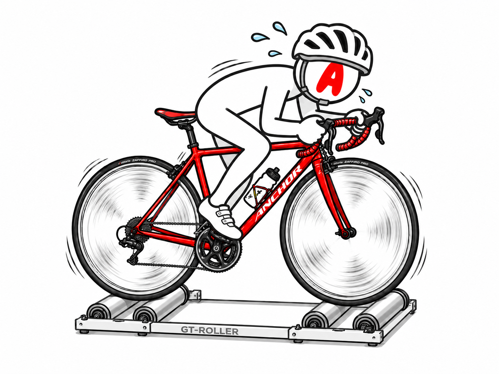

EXPERIMENTS
6つの実験
食事、ローラー、機材、AI相談、旧ブログのリメイクをここに整理します。毎日の記録より、変化が出た実験を優先します。


TEST 02
ローラー練習
Sweet Spot、VO2、20分走、FTP測定など、RNC7基準のワットと体感を記録します。数字だけでなく、翌日の脚と尻も見ます。
15分270W×2のローラー実験を見る
食事と補給
ライド日のご飯量、プロテイン、バナナ、レーズンパン、マスカルポーネなどを試します。減量より回復を優先します。
脚に力が入らない日の糖質実験機材とアイテム
Aethos2、RNC7、Tarmac SL6、ホイール、パワーメーター、補給食、ウェアなど。旧ブログの機材記事も今の目線で再評価します。
リメイク案: Tarmac SL6を今読み直す旧ブログ発掘
旧ブログ「ロードバイク時々マウンテン」をWayback Machineから発掘。昔の自分の記事に、今の自分とAIがツッコミを入れます。
旧ブログ発掘室へ体重とコンディション
体重、体脂肪率、睡眠、疲労感、脚の重さを単発ではなく傾向で見ます。家庭用体組成計の数字は絶対値ではなく流れで扱います。